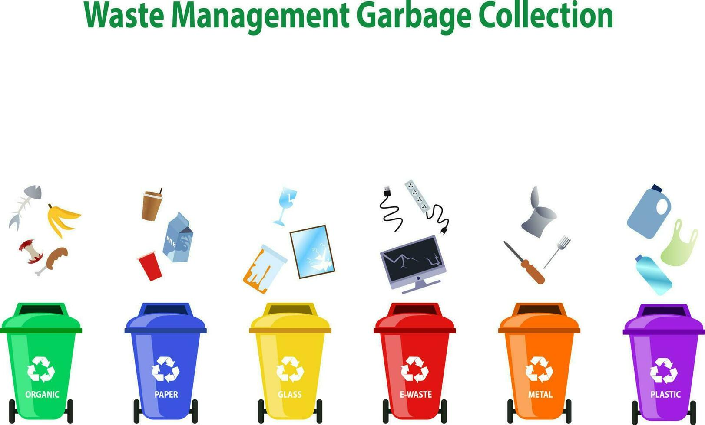

सुका-ओला कचरा वेगळा करून संकलन, खतनिर्मिती व शोषखड्डा,SLWM /LWM सांडपाणी व्यवस्थापन.
सांडपाणी व घनकचरा व्यवस्थापन याकरिता ग्रामपंचायत मार्फत 3 ठिकाणी घनकचरा व्यवस्थापन खत निर्मिती खड्डे याचे बांधकाम केले असून त्या ठिकाणी कचरा संकलित केला जातो व संकलित केलेला कचरा Compost खत निर्मिती करून गावातील लावलेल्या झाडांना वापर केला जातो.